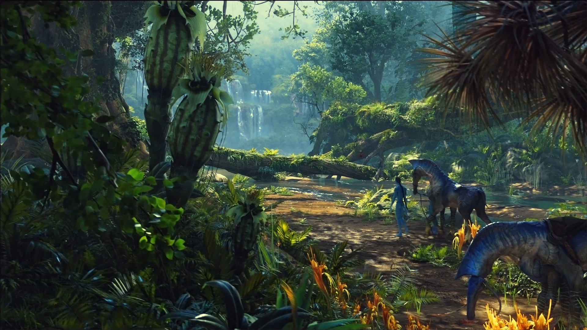
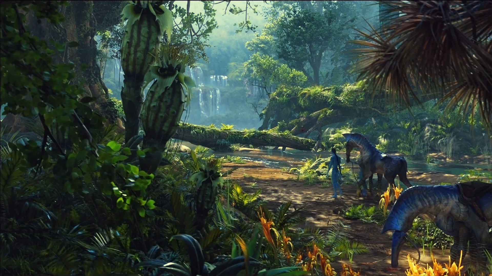
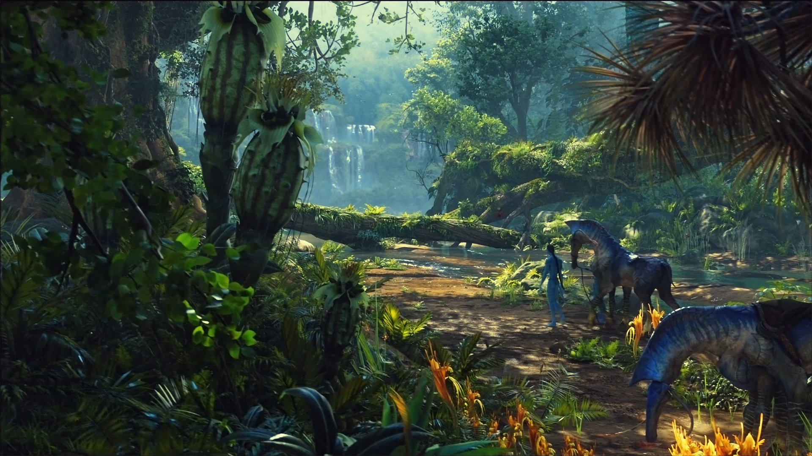

Benvenuti nella pagina Avatar! Qui andrete a scoprire, conoscere e amare alla follia tutto ciò che sappiamo su Avatar! Un argomento vasto come l'oceano e voi siete solamente dei pesciolini che ne sono appena addentrati. Ma perché Avatar? Come può interessare a tante persone di diverse passioni? E soprattutto, risulta interessante? A tutte queste domande ci sono delle risposte esaustive e interessanti, vi faranno apprezzare Avatar come film e come gioco, vi faremo conoscere tutte le curiosità divertenti e avvincenti e inoltre, tutti i premi e successi conferiti al creatore e ad Avatar. D’ora in poi Avatar sarà il vostro asso nella manica come argomento a cena e vi ci potrete trasvestire ad Halloween! Un’idea carina e originale, non comune per tutti e vi renderà unici. Qui sotto troverete dei wallpapers di Avatar e Avatar: La via dell'acqua. 👇
